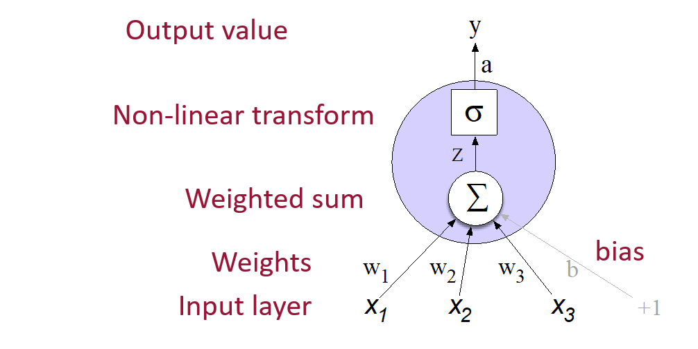
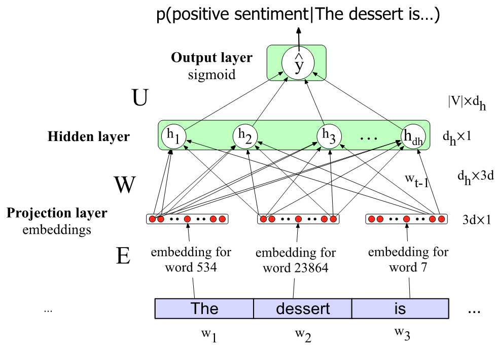

10 Chapter 9: Simple Neural Networks
11 Chapter 9: Simple Neural Networks
11.1 Ambiguity
Ambiguity arises when a sentence can be interpreted in more than one way. For example:
- “I saw the man with the telescope.”
- Who has the telescope—the speaker or the man?
Ambiguity is a significant challenge in NLP, as it can lead to multiple interpretations of the same sentence.
There are several types of ambiguity, including:
- Lexical ambiguity: When a word has multiple meanings.
- Structural (syntactic) ambiguity: When a sentence can be parsed in different ways.
To address ambiguity, we need models that capture sentence structure, such as:
- Parse trees
- Dependency graphs
- Other structural representations
11.2 Simple Neural Networks and Neural Language Models
Neural networks are powerful models that consist of layers of simple computational units. Each unit takes a vector of input values, applies weights and a bias, and produces a single output value through an activation function.
11.2.1 Structure of a Simple Neural Network
A typical neural network consists of:
- Input layer: Receives the input features.
- Weights: Each input is multiplied by a corresponding weight.
- Weighted sum: The weighted inputs are summed, and a bias term is added.
- Activation function: The sum is passed through a non-linear function.
- Output layer: Produces the final prediction.
11.2.1.1 Mathematical Formulation
Given input vector x = (x₁, x₂, …, xₙ), weight vector w = (w₁, w₂, …, wₙ), and bias b, the unit computes:
\[ z = \mathbf{w} \cdot \mathbf{x} + b \]
The output y is then:
\[ y = a = f(z) \]
where f is the activation function.
11.2.2 Example Walkthrough
Suppose we have a unit with weights w = [0.5, -0.3], bias b = 0.1, and input x = [2, 3].
Weighted sum: \[ z = (0.5 \times 2) + (-0.3 \times 3) + 0.1 = 1.0 - 0.9 + 0.1 = 0.2 \]
Activation function:
Using the sigmoid function: \[ \text{sigmoid}(z) = \frac{1}{1 + e^{-z}} = \frac{1}{1 + e^{-0.2}} \approx 0.55 \]
So, the output of this unit is approximately 0.55.
11.2.3 Common Activation Functions
Sigmoid:
\[ \sigma(z) = \frac{1}{1 + e^{-z}} \] Maps output to (0, 1). Useful for probabilities, but can cause vanishing gradients.Tanh:
\[ \tanh(z) = \frac{e^{z} - e^{-z}}{e^{z} + e^{-z}} \] Maps output to (-1, 1). Zero-centered and often preferred over sigmoid.ReLU (Rectified Linear Unit):
\[ \text{ReLU}(z) = \max(0, z) \] Simple and effective. Avoids vanishing gradients for positive values.
11.2.4 Why Activation Functions Matter
Activation functions introduce non-linearity, allowing neural networks to model complex relationships. For example, ReLU is widely used because it is computationally efficient and helps mitigate the vanishing gradient problem, which can occur with sigmoid or tanh for large input values.

Figure: A single neural network unit computes a weighted sum of its inputs, adds a bias, and applies an activation function to produce its output.
11.3 The Power of Multi-Layer Neural Networks: XOR Example
A single neural unit (perceptron) can compute simple logical functions like AND and OR, but not XOR. This is because XOR is not linearly separable—a single line cannot separate its positive and negative cases.
11.3.1 Truth Tables
| x₁ | x₂ | AND | OR | XOR |
|---|---|---|---|---|
| 0 | 0 | 0 | 0 | 0 |
| 0 | 1 | 0 | 1 | 1 |
| 1 | 0 | 0 | 1 | 1 |
| 1 | 1 | 1 | 1 | 0 |
11.3.2 Perceptron as Linear Classifier
A perceptron computes: \[ y = f(\mathbf{w} \cdot \mathbf{x} + b) \] where \(f\) is a step function. For AND and OR, weights and bias can be chosen so that the perceptron outputs the correct result. For XOR, no single line (decision boundary) can separate the outputs.
11.3.3 Why XOR Needs Multiple Layers
- AND/OR: Can be separated by a line (linear).
- XOR: Requires a curve or multiple lines (non-linear).
11.3.4 Multi-Layer Solution for XOR
A two-layer network with ReLU activation can compute XOR. For example:
- Hidden layer: 2 units
- Output layer: 1 unit
Suppose we choose weights and biases so that for input \(\mathbf{x} = [0, 0]\), the hidden layer outputs \([0, 0]\) and the final output is 0. For other inputs, the network can be set up so that the output is 1 for \([0, 1]\) and \([1, 0]\), and 0 for \([1, 1]\).
Exercise: Try computing the outputs for all input pairs to see how the network solves XOR.
11.3.5 Key Takeaway
Multi-layer neural networks with non-linear activation functions can learn complex functions (like XOR) by forming new representations in hidden layers. This ability to learn useful representations is a major strength of neural networks.
11.4 Feedforward Neural Networks
Feedforward neural networks are the foundation of many modern neural architectures. While more complex models like RNNs and Transformers are widely used in NLP, the simple feedforward (or multilayer perceptron, MLP) network remains a crucial building block.
11.4.1 What is a Feedforward Neural Network?
A feedforward network consists of multiple layers of units (neurons) where information flows in one direction—from input to output—without cycles or loops. Each layer receives inputs from the previous layer and passes outputs to the next.
- Input layer: Receives the raw input features.
- Hidden layers: Transform the input through learned weights and activation functions.
- Output layer: Produces the final prediction (e.g., class probabilities).
Note: Historically, “multilayer perceptron” (MLP) refers to these networks, though modern MLPs use activation functions like ReLU or tanh, not the original perceptron step function.
11.4.2 Structure and Computation
Let’s revisit logistic regression. Binary logistic regression can be viewed as a 1-layer network (not counting the input layer):
- Input: Vector \(\mathbf{x}\)
- Weights: Vector \(\mathbf{w}\)
- Bias: Scalar \(b\)
- Output: \(y = \sigma(\mathbf{w} \cdot \mathbf{x} + b)\), where \(\sigma\) is the sigmoid function.
11.4.2.1 Example: Logistic Regression as a Neural Network
Suppose \(\mathbf{x} = [2, 3]\), \(\mathbf{w} = [0.5, -0.3]\), \(b = 0.1\):
\[ z = (0.5 \times 2) + (-0.3 \times 3) + 0.1 = 0.2 \\ y = \sigma(0.2) \approx 0.55 \]
11.4.2.3 Example: Feedforward Network for Classification
Suppose we have:
- Input \(\mathbf{x} \in \mathbb{R}^3\)
- Hidden layer: 2 units, ReLU activation
- Output layer: 3 units (for 3 classes), softmax activation
Let: - \(\mathbf{W}\) is \(2 \times 3\) (hidden layer weights) - \(\mathbf{U}\) is \(3 \times 2\) (output layer weights) - \(\mathbf{b}\) is \(2 \times 1\) (hidden layer bias)
The computation is:
Hidden layer: \[ \mathbf{h} = g(\mathbf{W} \mathbf{x} + \mathbf{b}) \] where \(g\) is the ReLU activation function.
Output layer: \[ \mathbf{z} = \mathbf{U} \mathbf{h} \] \[ \mathbf{y} = \text{softmax}(\mathbf{z}) \]

11.5 Applying Feedforward Networks to NLP Tasks
Feedforward neural networks can be applied to a variety of NLP tasks. Let’s look at two common examples: text classification and language modeling.
11.5.1 1. Text Classification
Suppose we want to classify text (e.g., movie reviews as positive or negative). Traditionally, we might use logistic regression with binary features (e.g., word presence). With a feedforward network, we can do more:
- Input layer: Each word is represented as a vector (embedding), not just a binary feature.
- Hidden layer: Allows the network to learn non-linear interactions between features.
- Output layer: Produces a probability (e.g., positive or negative sentiment).
Why add a hidden layer?
A hidden layer enables the network to capture complex patterns and interactions between words, which may improve performance over simple linear models.
Example:
Suppose our input is a review:
"The movie was surprisingly good."
Each word is mapped to an embedding. The network can learn to focus on words like “surprisingly” and “good” to predict a positive sentiment.
11.5.2 2. Learning Features Automatically
A key strength of deep learning is the ability to learn features from data rather than relying on hand-crafted features. Hidden nodes can learn abstract representations by focusing on specific patterns in the embeddings.
- Instead of manually designing features, the network discovers useful patterns during training.
- This is fundamental to the power of deep learning for NLP.
11.5.3 3. Handling Variable-Length Input
Feedforward networks expect fixed-size input. In NLP, sentences and documents vary in length. Some common solutions:
- Padding: Pad shorter inputs with zeros to match the length of the longest input.
- Truncation: Cut longer inputs to a fixed length.
- Pooling: Create a single “sentence embedding” by combining word embeddings, e.g.:
- Mean pooling: Take the average of all word embeddings.
- Max pooling: For each dimension, take the maximum value across all words.
11.5.4 4. Multi-Class Classification
If you have more than two output classes (e.g., topic classification), add more output units—one for each class—and use a softmax layer to produce class probabilities.
11.5.5 5. Language Modeling
Task: Predict the next word \(w_t\) given previous words \(w_{t-1}, w_{t-2}, \ldots\)
- Traditional approach: N-gram language models, which have limited ability to generalize.
- Neural approach: Feedforward neural language models use word embeddings and can generalize better.
Example:
Suppose the training data contains:
I have to make sure that the cat gets fed.
But never:
dog gets fed
At test time:
I forgot to make sure that the dog gets ___
- An N-gram model may not predict “fed” after “dog gets”.
- A neural language model can use the similarity between “cat” and “dog” embeddings to predict “fed” after “dog”.
Handling sequences:
Feedforward models use a sliding window of fixed length (e.g., previous 3 words) as input. More advanced models (like RNNs and Transformers) handle arbitrary-length sequences.
Summary:
Feedforward neural networks provide a foundation for many NLP tasks. They enable learning from data, handle non-linear patterns, and can generalize better than traditional models, especially when using learned word embeddings.
11.6 Training Neural Networks
Training a neural network involves adjusting its weights to minimize the difference between the predicted output and the true output. This is typically done using an algorithm called backpropagation combined with gradient descent.
11.6.1 Training Steps
For each training example \((\mathbf{x}, y)\):
Forward Pass:
Compute the network’s prediction \(\hat{y}\) by passing \(\mathbf{x}\) through the network.Compute Loss:
Calculate the loss \(L(y, \hat{y})\), which measures how far the prediction is from the true value.Backward Pass (Backpropagation):
Compute the gradients of the loss with respect to each weight in the network.Update Weights:
Adjust each weight \(w\) using the gradients to reduce the loss (e.g., \(w \leftarrow w - \eta \frac{\partial L}{\partial w}\), where \(\eta\) is the learning rate).
11.6.2 What Happens During Backpropagation?
- For each output node, compute how much it contributed to the loss.
- For each hidden node, determine how much it contributed to the output error (its “blame”).
- Use these contributions to update the weights from the hidden layer to the output layer, and from the input layer to the hidden layer.
This process is repeated for many epochs (passes through the training data) until the network’s predictions are sufficiently accurate.
Key Points: - Training is iterative and data-driven. - Backpropagation efficiently computes gradients for all weights. - The learning rate controls how big each update step is.